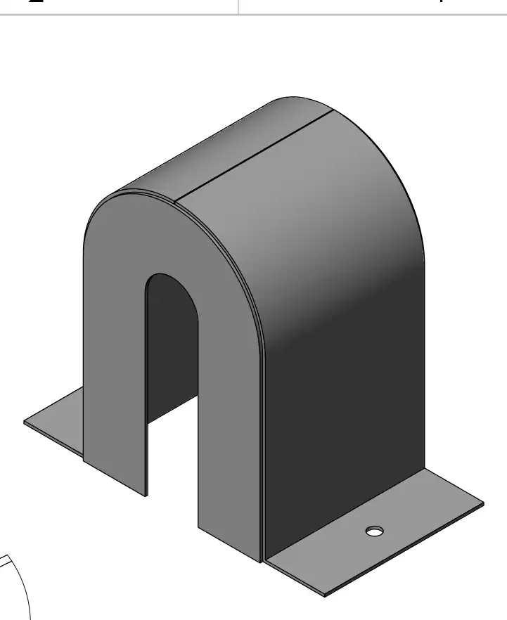
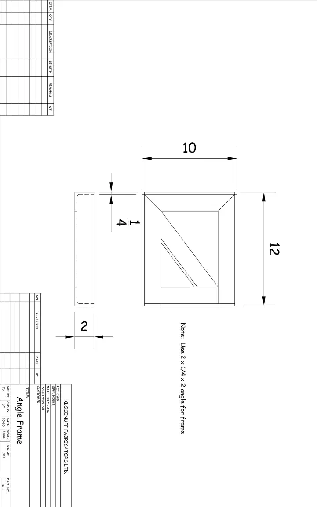
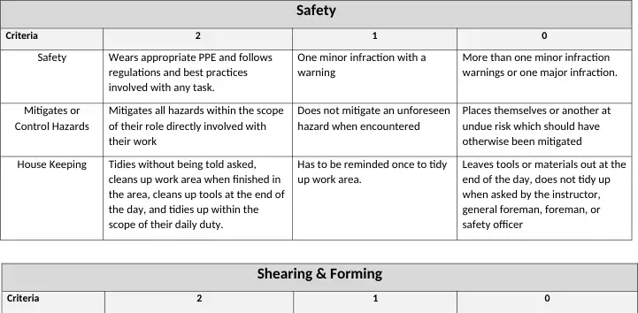
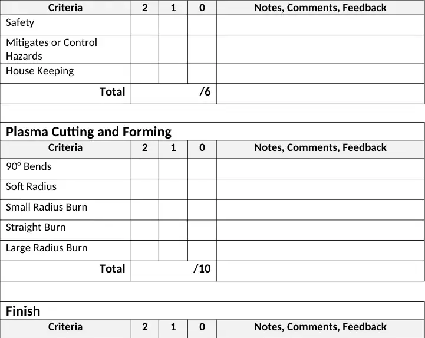
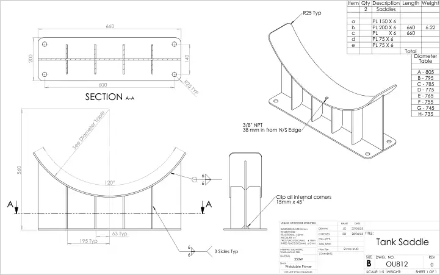

Read the project drawings, checklists and rubrics.
Read and listen
The voice reads the key points slowly. Pause any time.
- ProjectsLoad divider, tool tray, angle post, coupling guard, tank saddle, 3 piece elbow, dice, ring in ring.
- MarkingEach project has a rubric or checklist. Read it before you start.
- M and IThe material and inspection sheets list what to measure.
Games
Pictures come straight from the course documents. Questions come from the course answer keys and safe work procedures. Each one names its source.
Loading…
Loading…
Loading…
Loading…
Loading…
Loading…
Pictures from the course
11 pictures. Open a document to see them. Tap a picture to make it bigger.

Coupling Guard (1)


ELTTangleframe (1)


L1 G Angle Post Project Rubric (1)


L1 G Fabricate Coupling Guard Project Checklist (1)


Tank Saddle (1)



load divider rubric (4)


Documents in this module
- 1260_Shop_Practicals/3 Piece Elbow Rev 4.pdf 1 pages, 1 pictures
- 1260_Shop_Practicals/Angle Post.PDF 1 pages
- 1260_Shop_Practicals/Coupling Guard.PDF 1 pages, 1 pictures
- 1260_Shop_Practicals/Dice.PDF 1 pages
- 1260_Shop_Practicals/ELTTangleframe.pdf 1 pages, 1 pictures
- 1260_Shop_Practicals/L1 G Angle Post Project Rubric.docx 3 pages, 1 pictures
- 1260_Shop_Practicals/L1 G Coupling Guard Project Rubric.docx 3 pages
- 1260_Shop_Practicals/L1 G Fabricate Coupling Guard Project Checklist.docx 2 pages, 1 pictures
- 1260_Shop_Practicals/Load Divder Rev B.pdf 11 pages
- 1260_Shop_Practicals/M&I .pdf 3 pages
- 1260_Shop_Practicals/M&I 2.pdf 3 pages
- 1260_Shop_Practicals/M&I Angle Post.docx 3 pages
- 1260_Shop_Practicals/M&I Capstone.pdf 3 pages
- 1260_Shop_Practicals/M&I Ring in Ring.docx 3 pages
- 1260_Shop_Practicals/Tank Saddle M&I.docx 5 pages
- 1260_Shop_Practicals/Tank Saddle.pdf 1 pages, 1 pictures
- 1260_Shop_Practicals/Tool Tray 16ga_b.pdf 2 pages, 1 pictures
- H_Fabricate Components/load_divider_rubric.pdf 4 pages, 4 pictures